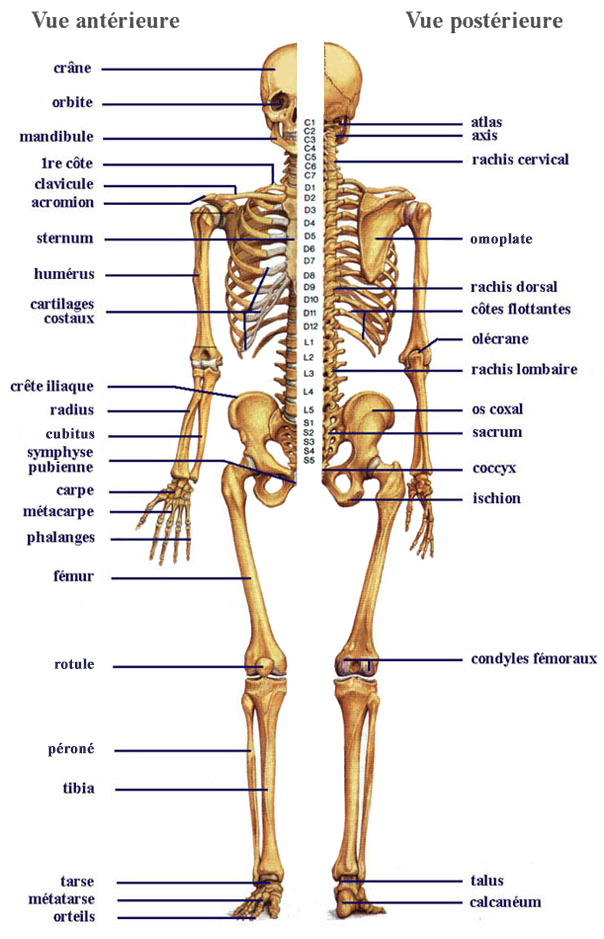
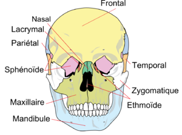
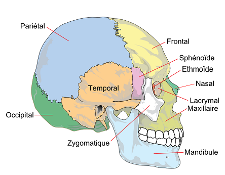
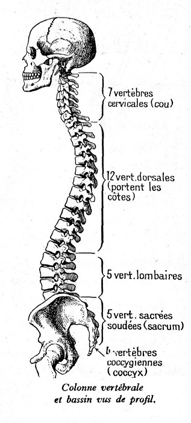
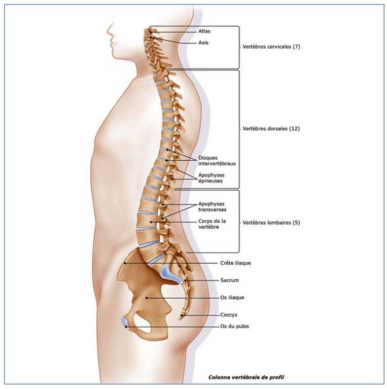
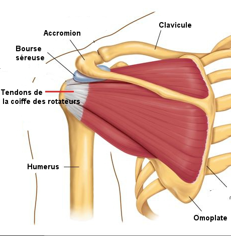
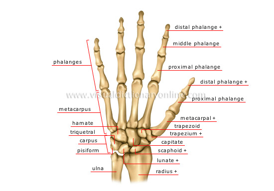
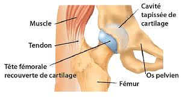
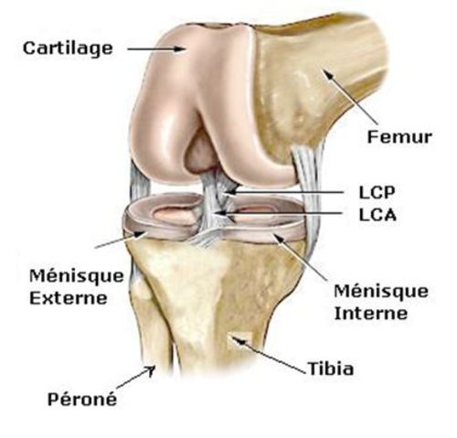

Le squelette

Le
squelette de l'homme adulte comprend 200 os et est forme de deux
parties :
- Le squelette axial :
- La tete : 22 os.
- L'os hyoede.
- La colonne vertebrale : 26 os.
- La cage thoracique : 25 os.
- Le squelette appendiculaire :
- Les membres superieurs : 64 os.
- Les membres inferieurs : 62 os.
La
tete

Le
crene
Le crene
est forme de 8 os (4 impairs et 4 pairs ou symetriques) qui forment la
boete crenienne qui contient l'encephale:
- Le frontal
: os impair et median, il forme le front et le plafond des cavites
orbitaires et des fosses nasales.
- L’ethmoede
: os impair et median, situe en arriere du frontal, constitue egalement
les orbites les fosses nasales.
- Le sphenoede
: os impair et median, situe en arriere de l’ethmoede. Son corps est
creuse d’une cavite oe se trouve l’hypophyse.
- L'occipital
: os impair et median, situe en arriere du sphenoede, creuse
d’un large orifice, le trou occipital, qui permet la communication
entre la boete crenienne et le canal rachidien.
- Les temporaux
: os pairs et lateraux, il protege l'oreille interne.
- Les parietaux
: os pairs et lateraux, situes en arriere du frontal et au-dessus des
temporaux.
La
face
La face
est forme par 14 os qui se regroupent en deux massifs osseux : la
mechoire superieur et la mechoire inferieure:
- Les 2 maxillaires superieurs
: portent les dents de la mechoire superieure.
- Les 2 malaires : ceux sont
les pommettes.
- Les 2 os propres du nez :
forment le squelette du nez.
- Les 2 os lacrymaux :
forment paroi interne des orbites.
- Les 2 os palatins :
entrent dans la constitution des fosses nasales et de la voete du
palais.
- Les 2 os cornets inferieurs
: os tres fins appliques e la paroi externe des fosses nasales.
- L'os
vomer : os entrant dans la constitution de la cloison des
fosses nasales.
- Le maxillaire
inferieur ou mandibule
: seul os mobile de la face.
- L’os
hyoede: il ne fait pas partie des os de la face. Il est
situe dans le cou entre la mandibule et le larynx. Il soutient la
langue et sert de point d’attache e certains de ces muscles.
La colonne
vertebrale ou rachis
Constitution
du rachis
Le rachis
est constitue de vertebres dont la juxtaposition forme la colonne
vertebrale.
-
Les 7 vertebres
cervicales : elles sont mobiles. On dit qu’elles sont en
lordose convexite anterieure. Le rachis cervical est divise en deux
parties:
-
Le rachis
cervical superieur : constitue de l’atlas et de l’axis.
-
Le rachis
cervical inferieur: constitue des cinq autres vertebres.
-
Les 12 vertebres
dorsales : on parle de cyphose dorsale. Elles sont en
convexite posterieure. Elles presentent sur la face laterale du corps
vertebral des petites facettes qui sont des surfaces articulaires avec
les cetes.
-
Les 5 vertebres
lombaires : on parle de lordose lombaire, convexite
anterieure. Leur taille augmente, surtout au niveau de leur corps
tandis que la taille du canal rachidien diminue.
-
Les 5 vertebres
sacrees : elles sont soudees entre elles et forment le
sacrum. Le sacrum s’articule avec la cinquieme lombaire.
-
Les 4 e 5 vertebres
coccygiennes : elles sont soudees entre elles et
constituent le coccyx. Le coccyx resulte de la fusion de 4 e 5
vertebres coccygiennes primitives atrophiees. Sa forme est
triangulaire, e base superieure. Il est appendu e la partie superieure
du sacrum.

Morphologie
d’une vertebre
Chaque
vertebre comprend :
-
Un corps
vertebral : partie anterieure arrondie en forme de
cylindre, dont les faces s’articulent avec les vertebres voisines
auxquelles elles sont reliees par le disque intervertebral.
-
Un arc
osseux : partie posterieure du corps vertebral et
limitant le trou vertebral ou trou rachidien qui permet passage de la
moelle epiniere.

La
cage thoracique
Les
cetes
Elle
comprend en arriere la portion dorsale de la colonne vertebrale,
lateralement, les arcs costaux et en avant le sternum. Elle est
constituee de 12 paires de cetes reparties en trois groupes :
- Les vraies
cetes : 7 paires qui s’etendent en avant par
l’intermediaire
de leur cartilage jusqu’au sternum.
- Les fausses
cetes : 3 paires qui se terminent en avant par un
cartilage
commun.
- Les cetes
flottantes : 2 paires, leur cartilage se termine par un
extremite libre.
Le
sternum
Le sternum
est situe e la partie anterieure et mediane du tronc. Il est
divise en trois partie :
- Le manubrium
sternale : partie superieure.
- Le corps
: partie moyenne.
- L'appendice
xiphoede : partie inferieur libre.
Les
membres superieurs
La
ceinture scapulaire
La
ceinture scapulaire est constituee de chaque cete par deux os :
- La clavicule
: os long qui s’articule avec le sternum et l’omoplate.
- L'omoplate
: os plat, triangulaire :
- La cavite
glenoede : cavite dans l'angle externe et qui s’articule
avec
l’humerus.
- L'acromion
: extremite externe de la face posterieure de l'omoplate qui
s'articule avec la clavicule.

Le
bras
L'humerus est l'os du
bras. Il est forme de trois parties :
- La tete
humerale : partie superieur qui s'articule avec la cavite
glenoede de l’omoplate.
- Le corps : lieu oe s'inserent les
muscles.
- L'extremite inferieure qui comporte deux
surfaces articulaire :
- La trochlee
: s'articule avec le cubitus.
- Le condyle
: s'articule avec le radius.
L’avant-bras
L'avant-bras est constitue de deux os :
- Le cubitus
: os plus long que le radius :
- Extremite superieure comportant deux
surfaces articulaires :
- La grande cavite sigmoede : s'articule
avec la trochlee de l'humerus.
- La petite cavite sigmoede : s'articule
avec le radius.
- Extremite inferieure : apophyse styloede
du cubitus qui s’articule avec
le poignet.
- Le radius
:
- Extremite superieure : la tete du radius
s’articule avec le condyle de
l’humerus est avec une petite surface articulaire du cubitus.
- Extremite inferieure :
- En dedans, surface articulaire avec la
tete du cubitus.
- A l’exterieur : apophyse styloede qui
donne insertion e des ligaments
du poignet.
- A sa face interieure : surface
articulaire avec le carpe.
La
main
La main
est compose de 27 os que l'on divise en trois parties :
- Le carpe
: forme de 8 os constituant le poignet qui sont disposes en 2
rangees.
- Le metacarpe
: 5 os longs qui constituent la paume de la main.
- Les phalanges
: 3 par doigts et 2 pour le pouce.


Les
membres inferieurs
La
ceinture pelvienne
La
ceinture pelvienne est constituee par le sacrum et le coccyx en
arriere, les os iliaques
lateralement. Chaque os iliaque est constitue
de l’ilion, l’ischion et le pubis.
La
cuisse
Le femur est l'os de
la cuisse.
- Extremite superieure : tete femorale qui
s’articule avec la cavite
cotyloede de l’os iliaque.
- Col
du femur : partie retrecie de la tete femorale qui
comporte deux
apophyses:
- Le grand
trochanter.
- Le petit
trochanter.
- Extremite inferieure : 3 surfaces
articulaires
- La trochlee
: s'articule avec la rotule.
- Les 2 condyles :
s'articule avec le tibia.

La
jambe
- Le tibia
: e l'interieur.
- Extremite superieure : 2 surfaces
articulaires :
- La 2 cavites glenoedes : s'articule avec
le condyle femoral.
- Extremite inferieure : surface
articulaire qui s'articule avec le
perone.
- Le tibia se prolonge en dedans par une
saillie osseuse, la malleole
tibiale ou malleole interne.
- Le perone
: e l'exterieur.
- Extremite superieure : tete du perone
qui s'articule avec le tibia.
- Extremite inferieure : surface
articulaire avec le tibia formant une
importante saillie appelee la malleole externe.

Le
pied
Le pied
est constitue de 26 os que l'on divise en trois parties :
- Le tarse
: forme de 7 os.
- Le metatarse
: forme de 5 os.
- Les phalanges
: 3 phalanges par doigts et 2 phalanges pour le gros
orteil.

Voir aussi :

 haut
de page
haut
de page